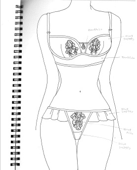
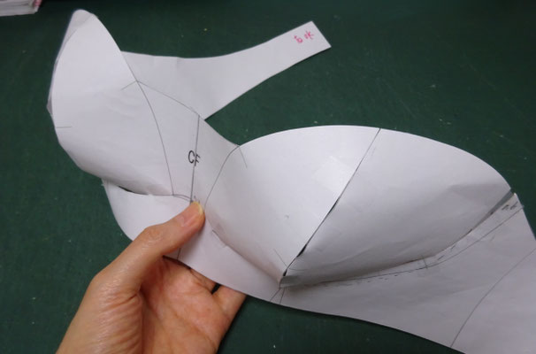
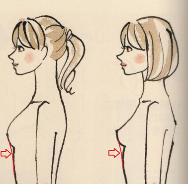
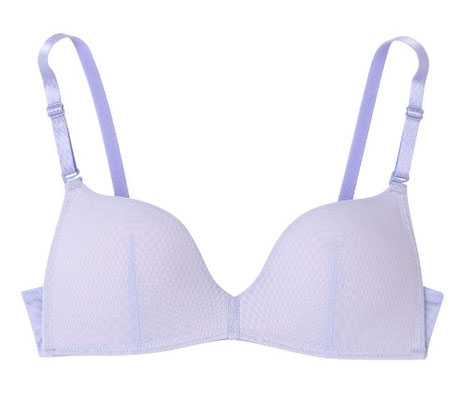
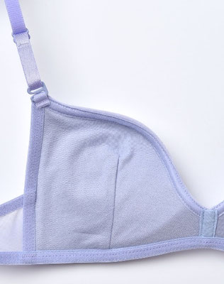

Considerations on the Bra — why flat drafting fails
Translator's note: this post matters because it names the exact reason flat/standard-form drafting overshoots cup depth for small and shallow busts: commercial and virtual bodies have ease built in, which smooths away the transition between the bust apex and the underbust. The author's "gold standard" alternative is plaster-bandage casting of the real chest.
It's been a while since my last update. The paper is still in progress and will likely take until summer. My heartfelt thanks to everyone who reached out even while this site was dormant — among them, a client who asked me to create a bra pattern.
Since I'm a patternmaker for clothes and lingerie is uncharted territory for me, I hesitated — but I have 3D CAD, and I was curious, so I gave it a try as an experiment. With the client's permission, here are my reflections on it.
First, I was reminded — quite forcefully — that underwear, i.e., the bra, is an entirely different animal. This time, of course, I worked with a 3D virtual body, but because a bra is so different from ordinary clothing, I started by groping for answers to the most basic questions: which virtual body to use, and what method to build with.
At first I tried deforming one of the stock virtual bodies. That failed. No matter what I did, the cup came out flat, and I couldn't achieve the shape I wanted. So instead I used the "real human body" — the second item from the top in the sidebar of my site.
This real-body model was created by scanning a subject with a 3D body scanner while wearing a bra. (In practice I deformed it further.) The subject is an E cup. To check my work, I assembled the resulting pattern in paper.


A bra, unlike clothing that covers the whole body, covers a very small, narrow region of the body. Everything comes down to just two points: how to shape the cup, and how to engineer the underbust structure that supports it.
As for the cup: whether you shape it as a bowl (お椀型), a Mount Fuji (富士山型), or a plate (お皿型) changes how the bust looks and also changes how the bra feels to wear. A bra looks simple at a glance, but because women's breasts vary so much individually in shape and size, I suspect it's genuinely difficult to make one well without a solid grasp of the theory.

The image above is one I borrowed from the BraDelis book The Power of Bras (『ブラの力』) and annotated myself. Why did the stock virtual body fail? Because bodies preloaded in CAD are industrial bodies with a bit of ease built in. That means the boundary shown by the arrows in the image — the transition between the bust apex (バストトップ) and the underbust (アンダーバスト) — is smoothed into a gentle slope. That's what produced the flat cup.
Of course, even the "real human body" (nude) is smoother than actuality. When a human body is scanned and converted into a virtual body, small bumps and hollows on the body are automatically excluded and smoothed out — because for drape drafting, a body with unnecessary lumpiness is hard to work with. Industrial bodies, after all, were made to make clothes, not underwear.
At graduate school, we took chest molds using the plaster-bandage method (石膏包帯法). It's the most analog approach, but it can capture the boundary between the bust apex and the underbust sharply and faithfully. The trouble is that plaster bandaging is extremely cumbersome: it takes time, and the subject gets exhausted. That's why one inevitably wants to use 3D CAD — but unfortunately, at present, the girths you can deform in 3D CAD are limited to the neck, bust, waist, and hip. If it were possible to deform the underbust, I believe it could be applied to forming bras…
Here is Wacoal's "Un Nanacool" (ウンナナクール) bra (image borrowed). As you can see, the cup is nearly flat — this is a plate-type (お皿型) bra. I own one myself, and I recommend it for people with smaller busts. It creates a beautiful décolleté line; I thought it was far more effective than pushing things up with pads. I'd recommend it for people up to a B cup, leaning C. But for larger busts, I think a cup with depth sits better.


Honestly, when I first encountered this bra, I was astonished that such a flat cup could produce a décolleté at all. My feeling is that small-busted women want to look bigger, and large-busted women want to look smaller — but bras for large busts are inevitably so big that they read "auntie" and not cute. Yet the way you construct the cup shape can change the entire presentation. Bras have real depth as a craft. Un Nanacool was a genuinely surprising piece of inverted thinking.